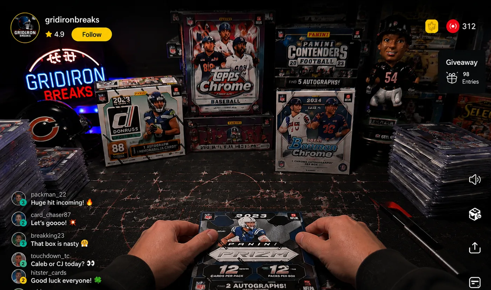
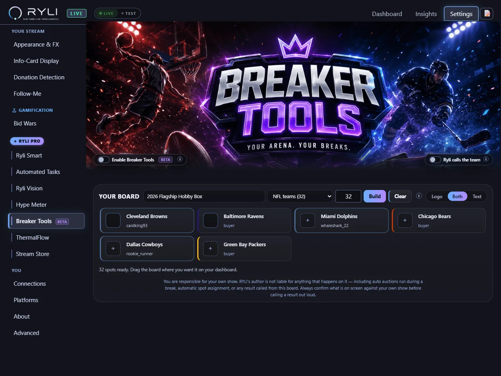
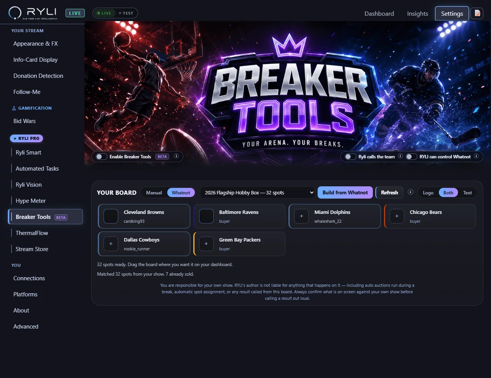

Run a break the whole room can read at a glance.
A live board of every spot in your break, on your stream. Who has what, what is still open, and who just landed the Cowboys — without anyone having to ask, and without you reading the list out again.
- Every spot on screen, claimed and open, updating as buyers land
- Ryli calls each team out loud the moment a spot settles
- Four mini-game signs for the moments a break needs a bit of theatre
- Runs from your dashboard — or from inside your Whatnot tab

Pick a league. The board builds itself.
Thirteen presets across seven sports. Every spot arrives with the real team name, the real abbreviation and the real colours — so a board is about ten seconds of setup, not an evening of typing.
Running a divisions break instead of a full team break? Football, basketball, baseball and hockey each have a divisions preset, so an 8-spot or 6-spot board is one click rather than a manual rebuild.
A 12-spot board and a 72-spot board are not the same picture.
Most of your room is watching on a phone, through a stream that has already been re-compressed once. So the board changes what each tile shows as the spot count climbs, instead of shrinking the same layout until nothing is readable.
- Up to 12 spots — full tiles: team, abbreviation and the buyer's name on every one
- Up to 20 — a tighter list that still names who owns each spot
- Up to 72 — compact team tokens, because a name at that size is a smudge
- Beyond that — a live counter, and the roster moves to its own card
You do not pick any of this. It follows the size of the break you built.

Four signs for the moments a break needs a bit of theatre.
Each one goes up on the board, runs a clock, and settles the spot when the buyer decides. You drive it; Ryli announces the result.
Stash or Pass
They keep the team they landed, or hand it back for the next one. One decision, on the clock, in front of everybody.
See 2 · Pick 1
Two teams go up, they take one. The one they leave goes back in the pool.
Pick Your Team
Open choice from whatever is still on the board — the premium spot, and the one people wait for.
Random Team
The board spins and lands it for them. Fastest way to fill a big break without stalling.
The decision clock defaults to 20 seconds and prompts rather than punishes: at zero the sign says TIME and stays up until you clear it, so nobody gets cut off mid-sentence because their stream was buffering.
You keep ripping. She keeps the room informed.
The moment a spot settles, Ryli says it out loud — “@buyer is on the Cleveland Browns” — so you are not narrating a spreadsheet between packs. It is the same voice that runs the rest of your show, and it stays out of the way of your regular auction announcements.
- Every settled spot announced by name, without you stopping
- Assign, clear and re-roll from the dashboard mid-break
- Let her drive Whatnot for you, or keep every action manual — both are switches you own
- Already built the break on Whatnot? RYLI matches your board to it: the teams, the spot count, and everyone who has already bought in
Being straight with you: Breaker Tools is in beta. It works, it has been through a full audit, and it is in real hosts' hands — but the automated Whatnot actions are the newest part of it, and they are a switch you turn on rather than something that happens to you.

Your next break can explain itself.
Breaker Tools is part of RYLI Pro, alongside the jumbotron overlay, the Hype Meter and Ryli's voice. The free tier is free forever, and every Pro feature is unlocked for the first 10 days.